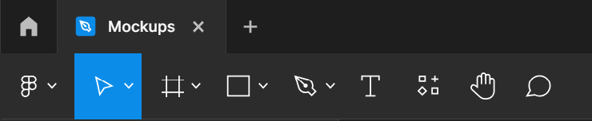
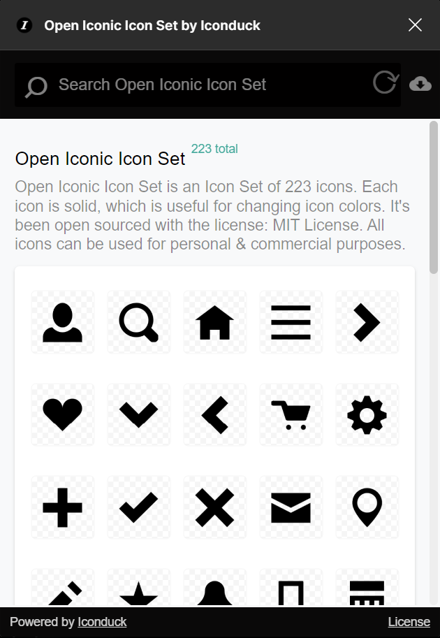

Uvod
Tema projektnog zadataka je zamišljena agencija za izradu web stranica po imenu Web Mountain Studios. Kroz projektni zadatak bit će objašnjen postupak u detalju kako su pojedini elementi stranice izrađeni pomoću besplatnih javno dostupnih alata. Projektni zadatak je podijeljen u 5 poglavlja sa naslovima: Grafika, Zvuk, Video, Slika, Tekst. U svakom od poglavlja bit će opisan proces izrade pojedinog elementa popraćen vizualnim pomagalima. Svrha svakog od poglavlja je educirati čitatelja kako samostalno postići sličan rezultat te dokazati validnost rada i kvalitetu autorovog znanja.
Sama web stranica i dokumentacija je napravljena koristeći HTML, CSS i Javascript programske jezike te hostana na besplatnoj usluzi po nazivu infinityfree (https://www.infinityfree.com/). Za izgled stranice koristi se javna CSS biblioteka Tailwind CSS (https://tailwindcss.com/)
Grafika - Logotip za tvrtku
Za početak potrebno je osmisliti vizualni identitet počevši sa logotipom. Za izradu logotipa koristit će se besplatni alat za izradu vektorske grafike Inkscape (https://inkscape.org/). Prvo je potrebno osmisliti ideju i ime tvrtke pri čemu je bitno paziti na originalnost kako ime ne bi bilo previše slično ili isto neke druge kompanije. Odabrano je ime Web Mountain Studios zbog originalnosti, povezanosti sa konceptom interneta, to jest weba, i zbog dostupnosti domene s tim imenom.
Koncept logotipa je planina te će logotip se sastojati od apstraktnog prikaza planine i imena tvrtke. Konačni izgled može se vidjeti u slici priloženoj ispod.
(Web Mountain Studios logo)Za crtanje planine koristit će se dva alata u inkscape-u:
- alat za pisaljku
- alat za oblik
Okrugli obrub je nacrtan pomoću alata za izradu oblika a planina unutra pomoću alata za pisaljku. Kako bi se postigao željeni efekt koji daje dojam da su određeni oblici izrezani iz planine koristi se alat razlika iz izbornika Staza.
(inkscape izbornik)Za vrijeme crtanja oblika, boje i ostali elementi pisaljke i oblika može se podesiti na izborniku s desne strane ekrana. Naime taj izbornik može sadržavati sve potrebne podizbornike za uređivanje elemenata grafike. Osim podizbornika za boju može sadržavati i podizbornik za uređivanje teksta i biranje fonta. Taj podizbornik je potreban za uređivanje imena tvrtke u logotipu.
(inkscape podizbornici)Primjenom ovih alata inkscape-a postigne se željeni rezultat i logotip za agenciju Web Mountain Studios. Nakon finalnog dizajna on se mora izvesti i spremiti u PNG formatu. To se postiže pomoću izbornika za izvezivanje.
Zvuk - Radio Reklama
Pomoću javno dostupnog alata za obradu zvuka Audcatiy (https://www.audacityteam.org/). Ideja koja će biti realizirana je radio reklama za prije spomenutu agenciju Web Mountain Studios. Za početak potrebno je dobiti snimku smišljenog teksta. Umjesto snimanja zvuka samostalno, moguće je koristiti jedan od novih, besplatnih alata koji koriste umjetnu inteligenciju, npr. ElevenLabs (https://elevenlabs.io/). Sučelje ovog alata je vidljiv u slici ispod.
 (ElevenLabs - sučelje)
(ElevenLabs - sučelje)
Nakon što je tekst ubačen u alat, audio datoteka može biti preuzeta kako bi se uvezla u Audacity. Osim samog teksta potrebni su još i pozadinska glazba te određeni zvučni efekti koji će poboljšati reklamu. Stranicu za preuzimanje ovih zvučnih datoteka koja se može koristiti je Pixabay (https://pixabay.com/), zbog toga što ona sadrži slike, i zvukove otvorene licence, što znači da se slobodnu smiju koristiti u svrhu ovog projekta. Pjesma koja će se koristiti se zove Rise Above zbog svoje napetosti, a zvučni efekat koji se zove Massive Thump koji će pomoći sa dodatnim naglašavanjem određenih trenutaka. Sve audio datoteke koje su preuzete su tipa .mp3 i trebaju biti uvezene u Audacity pomoću Uvezi alata.
 (Audacity - Uvoz)
(Audacity - Uvoz)
Nakon što su sve datoteke uvezene, Audacity bi trebao ličiti kao na slici vidljivoj ispod
 (Audacity - sučelje)
(Audacity - sučelje)
Prvo je potrebno skratiti glazbu na duljinu par sekundi dulju neko audio glasa te na taj, višak, dodati učinak Studio Fade Out tako da se taj dio označi i u izborniku za učinke odabere podizbornik fading te opcija Studio Fade Out. Osim toga zvučni efekt je potrebno kopirati i zalijepiti na prikladna mjesta u audio traci. Mjesta koja su odabrana su na početku glasnijeg dijela pjesme i na zadnjem izgovoru imena tvrtke kako bi se dodao dodatni naglasak na naziv agencije.
Za sami kraj potrebno je utišati glazbu kako bi se glas kvalitetno čuo na -21,00 dB pomoću alata lijevo od audio trake pjesme. Nakon toga, pritiskom na opciju Export Audio u izborniku „Datoteka“, moguće je izvesti cijelu audio traku u .mp3 formatu. Taj format je izabran zato što će reklama biti pohranjena na webu gdje je prostorna efikasnost bitna, čak i bitnija nego kvaliteta.
Gotova reklama je dostupna na ovom linku.
Video – Izrada Dizajna
Ideja videa je kratak prikaz procesa izrade jednog dizajna web stranice. Alat koji će se koristiti je DaVinci Resolve zbog svojih mogućnosti na razini profesionalnog softvera koji se koristi u industriji i primamljive cijene od 0€ (https://www.blackmagicdesign.com/products/davinciresolve). Prvo je potrebno snimiti dva videa istovremeno. Naime, pomoću alata za snimanje ekrana OBS (https://obsproject.com/) čije sučelje (kada se postavi na način za snimanje), izgleda kao na slici ispod.
(OBS - sučelje)Pomoću izbornika Scene i Izvori podesi se da OBS snima zaslon ekrana na kojem se stvara dizajn. Istovremeno druga osoba, sa kamerom ili u ovom slučaju mobitelom snima osobu koja izrađuje dizajn. Na mobitelu se upali aplikacije kamere i kontinuirano snima kako bi osoba koja uređuje video imala što više mogućnosti i kadrova koje može iskoristiti. Nakon što su snimke snimljene u svrhu izrade videozapisa bit će potrebni još 4 stvari:
- Stock video planina
- Logo agencije
- Završeni dizajn
- Pozadinska glazba
Stock video planina, kao i pozadinska glazba je moguće preuzeti preko stranice Pixabay (https://pixabay.com/). Nakon što su svi elementi spremni i novi projekt u DaVinci Resolvu započet, ekran bi trebao izgledati kao što je vidljivo na slici ispod.
(DaVinci Reslove - sučelje)Desnim klikom na „media pool“ moguće je unijeti medijske elemente koji će se koristiti. Nakon toga potrebno ih je postaviti u video traku koje sa nalazi ispod jedno ispod drugog. Dodatni slojevi u video traci se dodaju desnim klikom pa izbor „Add Track“. Nakon toga sve izmjene će se uređivati u „Edit“ načinu rada. U ovom načinu editor ima više mogućnosti uređivanja medija. Prvobitno je potrebno isključiti sav zvuk osim odabrane glazbe. To se postiže, kao i brisanje bilo kojeg dijela videa i sl. radnji, odabirom zvučne trake i pritiskom tipki Ctrl + X (Cut). Za skraćivanje videa i zadržavanja samo najbitnijih dijelove koristi se Cut alat. U slici ispod je vidljiv završni „timeline“ videa.
(DaVinci Reslove - Timeline)Osim što su dva snimljena vide izrezani, na početak videa je dodan stock video planine i s logom agencije postavljen preko. Na video i sliku su dodani Fade Out i Fade In efekti. Oni se dodaju povlačenjem iz gornjih vrhova medija koji su odabrani. Osim toga dodana su dva prijelaza iz Toolbox izbornika. U njemu se može pronaći popis prijelaza koji se mišem samo povuku i stave na prijelaz između dva videa. Jedini efekt koji treba dodati je zumiranje i pomicanje lijevo prema desno. Naime, pritiskom na video traku u gornjem desnom dijelu ekrana prikazati će se izbornik gdje se mogu podesiti pozicija i zumiranje video trake mijenjanjem vrijednosti pored naziva atributa videa.
(DaVinci Reslove - Transform)Pomicanje od lijevo prema desno se postigne pritiskom na dijamant s desne strane. To će postaviti vrijednosti tih atributa u tom trenutku u videu. Da bi se video pomicao, na kraju videa potrebno je postaviti druge vrijednosti i opet pritisnuti dijamant, što postavlja „keyframe“, te će video automatski postepeno prelaziti između te dvije vrijednosti.
Za kraj potrebno se prebaciti u „Deliver“ način rada. Pošto će video biti objavljen na youtube u render settings potrebno je odabrati opciju YouTube 1080p te pritisnuti gumb Add to Render Queue nakon odabira lokacije gdje će se video spremiti i naslova videa. Nakon toga pritiskom na gumb Render All video će se izvesti i spreman je za objavu na YouTube. Video se može pogeldati na ovom linku: https://www.youtube.com/watch?v=APOssn6G7JI
Slika - Mockup
Pomoću besplatnog alata za izradu dizajna i kolaborativan rad Figma (https://www.figma.com/) u svrhu zadatka izrađeno je 4 dizajna (Mockupa) za web stranice. U svrhu dokumentacije projektnog zadatka bit će dokumentirana izrada jednog od njih. Ostali dizajni mogu se vidjeti na sljedećoj poveznici (portfolio), a dizajn koji će biti dokumentiran je vidljiv ispod.
 (Figma - mockup)
(Figma - mockup)
Ideja stranice je tvrtka za osobne trenere. Kako bi lakše mogli dizajnirati stranicu treba ju prvo razdvojiti na više jednostavnijih dijelova. Elementi ovog dizajna su sljedeći (od gore prema dolje):
- navigacija
- glavni naslov s pozadinskom slikom
- dodatni detalji
- poveznice na društvene mreže
- autorska prava / licenca
U slici ispod se može vidjeti glavna alatna traka Figme. Svaki alat je vrlo jednostavan no moćan i nakon dubljeg upoznavanja omogućavaju izradu profesionalnih dizajnova. Za stvaranje dizajna prvo je potrebno odabrati alat za stvaranje okvira i stvoriti okvir veličine 1440px puta 1040 px kao standardna veličina desktop ekrana. Svi elementi će biti postavljeni na taj okvir.
 (Figma - alati)Navigacija se sastoji od 3 dijela. Prvi dio, logo koji je poravnat lijevo prema web dizajn standardima, je namijenjen da se zamjeni sa aktualnim logom tvrtke koja izabere ovaj dizajn za njihovu stranicu te je na njegovo mjesto stavljen jednostavan dizajn. Logo se sastoji od dvije riječi različitih težina i jednostavnog oblika kao akcenat. U Figmi ovaj dizajn se može postići na sljedeći način. Pomoću alata za tekst stvoriti tekstni okvir i popuniti ga željenim riječima. Riječi se mogu urediti pomoću izbornika vidljivog ispod.
(Figma - tekst)Tu se može postaviti željeni font (Roboto) i njegovu veličinu, te ostali aspekti poput razmaka slova i njihova debljina. Nakon toga se treba dodati crveni krug pomoću alata za oblike. Kako bi se postigla rupa u krugu treba dodati još jedan oblik, pravokutnik, i napraviti oduzimanje ta dva oblika pomoću izbornika vidljivog ispod.
(Figma - subtrakcija)Središnju navigaciju je moguće postići pomoću alata za tekst, a gumb za kontakt pomoću alata za tekst i oblike. Strjelica pored riječi može se postići na dva različita načina. Ili kombinacijom linija pomoću alata za oblike ili pomoću ikone preuzete iz plugina Iconduck. Iz tog plugina mogu se pronaći i ikone za društvene mreže.
 (Figma - ikone)Ostali elementi dizajna se postižu na slične načine kombinacijom teksta i oblika. Jedini element koji je preostao za objasniti je pozadinska slika. Samu slika se pronađe preko stranice za slike javne licence (https://pixabay.com/) . Nakon toga sliku je potrebno urediti pomoću izbornika vidljivog ispod.
(Figma - slika)Osim mijenjanja saturacije slike potrebno je dodati dva sloja iznad kako bi se postigao željeni efekt. Prvi sloj je okrugli prijelaz iz potpuno prozirnog u potpuno crnog a drugi sloj je crna boja smanjenje vidljivosti kako bi zatamnjeli sliku. Prijelazi i boje se mogu uređivati u izborniku vidljivom ispod.
(Figma - prijelaz)S ovim znanjem osoba je spremna izraditi sve elemente dizajna i posložiti ih prema priloženoj slici. Time će postići moderan i atraktivan dizajn spreman za profesionalnu potrebu.
Tekst - Reklama
Pomoću softvera za izradu profesionalnih dokumenata poput brošura, knjiga ili u ovom slučaju članka u novinama Scribus napravljen je članak o agenciji Web Mountain Studios s ciljem promocije. Scribus (http://www.scribus.us/) je softver otvorenog za stolno izdavaštvo i, iako je poprilično star alat, sadrži različite alate koji omogućuju izradu članka profesionalne kvalitete.
 (Web Mountain Studios - reklama za novine)
(Web Mountain Studios - reklama za novine)
Prvo je potrebno stvoriti novu datoteku te na praznoj stranici označiti okvire teksta i slika na stranici.
(Scribus - okviri)Nakon postizanja željenog rasporeda može se započeti sa ubacivanjem i oblikovanjem sadržaja. Prvo je potrebno popuniti tekst sa tekstualnim primjerom pomoću desnog klika na tekstualni okvir i otvaranja izbornika za tekstualne primjere. Tu je moguće odabrati jezik teksta kojim će tekstualni okvir biti popunjen. Nakon toga, potrebno je podesiti font te njegovu veličinu. To je moguće pomoću izbornika Uređivač teksta.
(Scribus - uređivač teksta)U tom izborniku može se mijenjati tekst te mijenjati svojstva teksta to jest fonta. Font koji će se koristiti u ovom zadatku se zove „U001“. Odabran je zbog svog minimalističkog modernog dizajna te lake čitljivosti. Nakon toga potrebno je podesiti veličinu fonta. Paragrafi teksta imaju veličinu fonta 10 pt te naslov ima veličinu fonta 40 pt. Poravnanje paragrafa je obostrano, a poravnanje naslova je centrirano. Nakon što je dizajn finaliziran moguće je ubaciti sami sadržaj. (Za sadržaj pretpostavka je da su slike i tekst pripremljeni od prije).
Slike je potrebno prilagoditi okviru pomoću desnog klika jer često odabrane slike neće biti savršenih dimenzija odabranih okvira. Nakon ubačenog sadržaja vrijeme je za završne detalje. Određene dijelove teksta te naslov je potrebno podebljati odabirom „Bold“ verzije fonta te dodati pozadinsku sliku tako da se postavi okvir slike preko cijele stranice i poslati ga na dno pomoću izbornika vidljivog ispod. Napokon, članak je finaliziran i spreman za objavu.
(Scribus - razina)